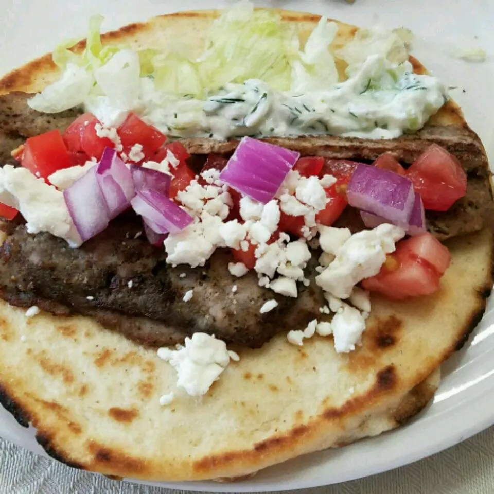

Traditional Gyro Meat

Ingredents
- ½ onion, cut into chunks
- 1 pound ground lamb
- 1 pound ground beef
- 1 tablespoon minced garlic
- 1 teaspoon dried oregano
- 1 teaspoon ground cumin
- 1 teaspoon dried marjoram
- 1 teaspoon ground dried rosemary
- 1 teaspoon ground dried thyme
- 1 teaspoon ground black pepper
- ¼ teaspoon sea salt
Directions
- Pulse onion in a food processor until finely chopped.
Scoop onions onto the center of a towel, gather up the towel ends,
and squeeze to remove liquid.
- Combine onions, lamb, beef, garlic, oregano, cumin, marjoram,
rosemary, thyme, pepper, and salt in a large bowl.
Mix with your hands until well combined. Cover and refrigerate 1
to 2 hours to allow the flavors to blend.
- Preheat the oven to 325 degrees F (165 degrees C).
- Place the meat mixture into a food processor and pulse until finely
chopped and the texture feels tacky, about 1 minute. Transfer to a 7x4-inch loaf pan, and pack down to make sure there are no air pockets.
- Line a large roasting pan with a damp kitchen towel. Place the loaf
pan in the center of the towel-lined roasting pan, and transfer it
into the preheated oven. Carefully pour boiling water into the
roasting pan until it comes halfway up the sides of the loaf pan.
- Bake in the preheated oven until gyro meat is no longer pink in the
center and the internal temperature registers 165 degrees
F (75 degrees C) on a meat thermometer, 45 minutes to 1 hour.
- Pour off any accumulated fat, and allow to cool slightly before
slicing thinly and serving.